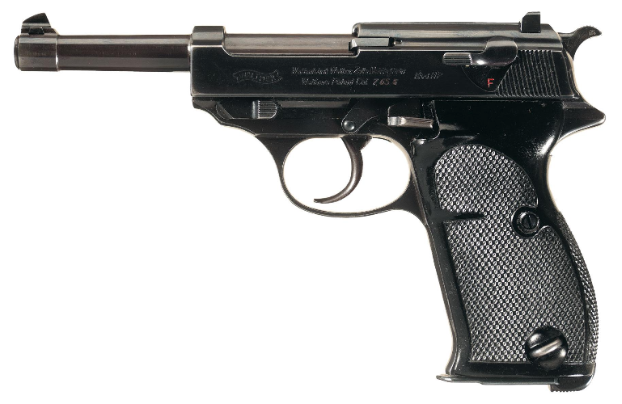
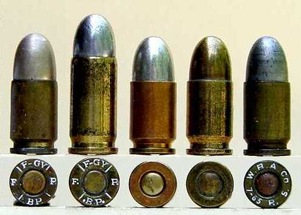
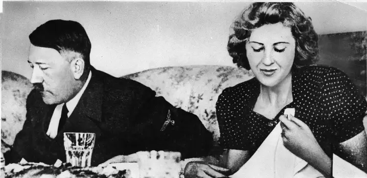
Pistolul : 7.65 mm Luger Auto
Producător : Carl Walther GmbH Sportwaffen / Walter
Origine : Germania
Muniție : 7.65 mm
Acesta este modelul de pistol care a fost găsit lângă corpul lui Adolf Hitler din clădirea Cancelariei din Berlin , Germania . Liderul nazist , Adolf Hitler s-a împușcat în cap cu pistolul său , probabil după ce a înghițit cianură , punându-și capăt vieții chiar înainte de 3: 30 , 30 aprilie 1945 . În aceeași cameră, Eva Braun - noua lui soție - și-a încheiat viața înghițind o capsulă de cianură . După moartea lor, membrii SS le-au dus trupurile în curtea Cancelariei , i-au acoperit cu benzină și le-au dat foc .
Acest pistol a fost folosit foarte des și de către trupele germane în timpul celui de-al Doilea Război Mondial .
În zilele noastre , acest tip de pistol este considerat un trofeu .
Preț actual : $ 17,250

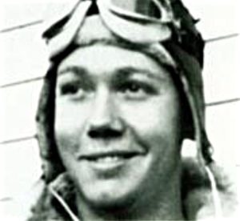
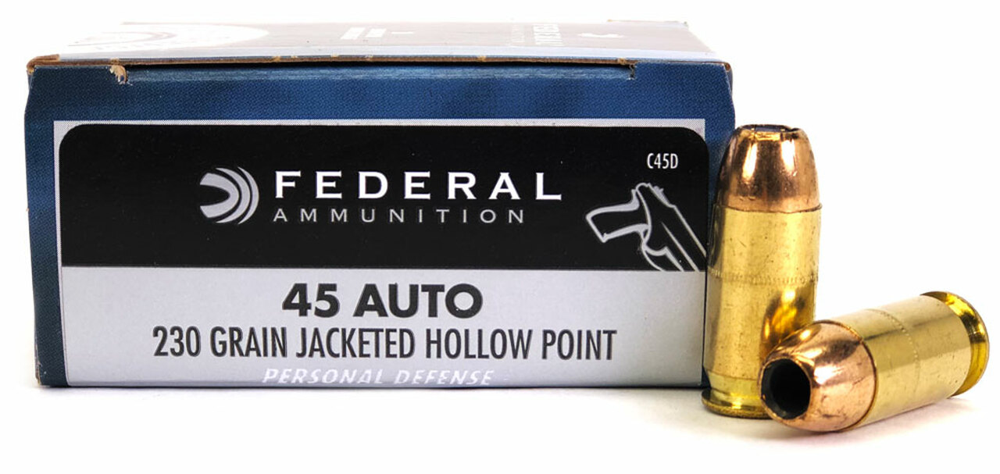
Pistolul : M1911 A1 / Colt 1911
Producător : John Browning
Origine : USA
Muniție : .45 ACP
Un pistol folosit în mare parte de americani între anii 1911-1985 . Acesta le-a fost dat soldaților în Primul Război Mondial , al Doilea Război Mondial și în războiul din Vietnam . Acest pistol este foarte popular și în rândurile civililor , chiar și în zilele de azi.
Acest pistol a mai fost făcut cunoscut și de către locotenentul Owen John Baggett prin incredibila utilizare a lui în aer . Legenda spune că al 2-lea lt. Owen J. Baggett a fost trimis împreună cu escadrila a 9-a a Grupului 7 Bombe pentru a distruge un pod lângă o bază japoneză la jumătatea distanței dintre Rangoon și Mandalay în Burma pe 31 martie 1943 . Baggett a fost copilotul unui bombardier B-24 , iar primul col. Lloyd Jansen a fost pilotul . Când avionul a fost grav avariat de luptătorii inamici , Jansen a dat ordinul ca echipajul să părăsească avionul , mesaj pe care Baggett l-a transmis prin semnale de mână pentru că calea de comunicații fusese distrusă . Baggett a sărit din avion și Air Force Magazine rapoartează:
" Piloții japonezi au început imediat să-i atace pe membrii echipajului care s-au parașutat , ucigând aparent pe unii dintre ei și zgâriind brațului locotenentului Baggett.Pilotul care l-a lovit pe Baggett s-a întors să-l omoare sau poate doar ca să-și vadă mai bine victima . Baggett s-a prefăcut că e mort , sperând ca pilotul să nu mai tragă . În orice caz , pilotul și-a scos capul din avion și s-a apropiat la câțiva metri de parașuta lui Baggett . Baggett , înfuriat de uciderea colegilor săi de echipaj neajutorați , a ridicat .45 M1911 A1-ul ascuns de o parte a piciorului său și a tras patru focuri de armă la cabina de pilotaj deschisă .Pilotul japonez a fost omorât iar avionul acestuia s-a învârtit până la prăbușire . "
Preț actual : $ 1,799
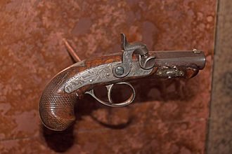
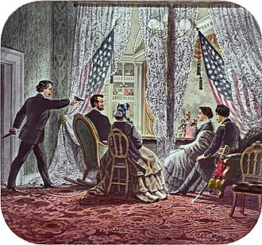
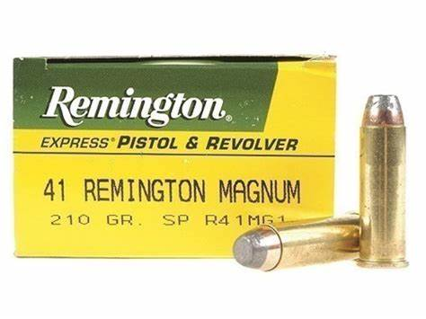
Pistolul : Derringer / Philadelphia Deringer (originalul)
Producător : Henry Deringer
Origine : USA
Muniție : .41 caliber (capace de percuție)
Acesta este modelul de pistol cu care Abraham Lincoln a fost asasinat (iar cel din poză este pistolul asasinului) .
Abraham Lincoln , al 16-lea președinte al Statelor Unite , a fost asasinat de cunoscutul actor de teatru John Wilkes Booth pe 14 aprilie 1865 , în timp ce participa la piesa "Vărul nostru american" la Teatrul Ford din Washington , D.C. . Împușcat în cap în timp ce privea piesa , Lincoln a murit a doua zi la 7:22 dimineața , în Casa Petersen , vizavi de teatru . El a fost primul președinte american asasinat , funeraliile și înmormântarea sa marcând o perioadă lungă de doliu național.
Având loc aproape de sfârșitul Războiului Civil American , asasinatul a făcut parte dintr-o conspirație mai amplă menită de Booth să reînvie cauza confederată prin eliminarea celor mai importanți trei oficiali ai guvernului Statelor Unite . Conspiratorii Lewis Powell și David Herold au fost însărcinați să-l ucidă pe secretarul de stat William H. Seward , iar George Atzerodt a fost însărcinat cu uciderea vicepreședintelui Andrew Johnson . Dincolo de moartea lui Lincoln , complotul a eșuat : Seward a fost doar rănit , iar atacatorul lui Johnson și-a pierdut cumpătul . După o evadare inițială dramatică , Booth a fost ucis la punctul culminant al unei vânători care a durat 12 zile. Powell , Herold , Atzerodt și Mary Surratt au fost mai târziu spânzurați pentru rolurile lor din cadrul conspirației .
Termenul de Derringer mai este folosit și astăzi pentru pistoale/revolvere foarte mici .
Preț actual : !nu se poate găsi! (posibil numai în cadrul licitațiilor private)
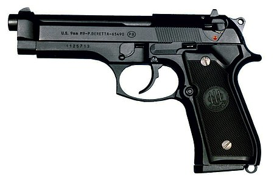
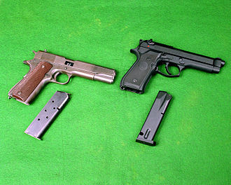
Pistolul : Beretta M9
Producător : Berreta (Fabbrica d'Armi Pietro Beretta="Pietro Beretta Gun Factory")-Bartolomeo Beretta
Origine : Italia
Muniție : 9mm
Beretta M9-pistol , semiautomatic , 9mm . M9-este denumirea pentru Beretta 92F (pistolul semiautomat) , arme utilizate de către Forțele Armate ale Statelor Unite . M9 a fost adoptat de armata Statelor Unite ca pistol de serviciu în 1985.
M9 a câștigat o competiție în 1980 pentru a înlocui M1911 A1 ca sidearm primar al armatei americane , învingând mulți alți concurenți . Acest pistol a reușit să înfrângă la limită arma SIG Sauer P226 din motive de cost .
A intrat oficial în serviciu în 1990 .
Și alte pistoale au fost adoptate într-o măsură mai mică , și anume pistolul M11 , iar alte modele rămân în uz în anumite zone .
Preț actual : în jur de $ 600
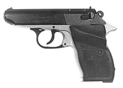
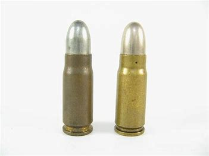
Pistolul : Carpați Md. 1974 (singurul pistol care poate trage după colț)
Producător : Fabrica de Arme Cugir S.A.
Origine : România
Muniție : 7,65mm
Pistolul calibrul 7,65 mm Md. 1974 , cunoscut și sub denumirea de Carpați , este o armă individuală destinată luptei antipersonal la distanțe mici (până la 50 m) .
Modelul a fost produs de către Întreprinderea Mecanica Cugir (întreprindere cu 18.000 de angajați înainte de anul 1989 și doar 1.000 în anul 2008.) . Construcția pistolului este similară cu cea a pistolului Walther PP/PPK , însă nu este o copie exactă a acestuia . Pistolul lucrează cu dublă acțiune la primul foc și cu simplă acțiune la următoarele . Tragerea se execută numai foc cu foc , încărcarea fiind automată .
Pistoalele Walther PPK au apărut prima dată în anul 1930 și au fost produse de grupul nemțesc Carl Walther GmbH Sportwaffen . „PPK” este o prescurtare pentru Polizeipistole Kriminalmodell (pistol de poliție) . Așadar , nemții sunt cei care au inventat strămoșul celebrului pistol Carpați .
În anul 2016, Ministerul de Interne a decis să scoată pistoalele Carpați din dotarea standard a poliţiştilor români . Acestea au fost înlocuite cu arme de tip Glock , mult mai performante . Pistolul Glock este fabricat în Austria , încă din anul 1982 . În cei 40 de ani de existență a fost vândut în peste cinci milioane de exemplare .
Preț actual : în jur de 350 de lei dacă nu mă minte Internetul
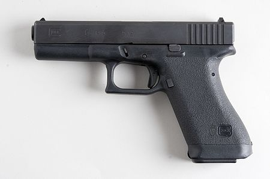
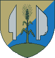
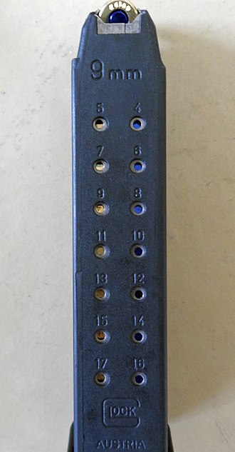
Pistolul : Glock 17
Producător : Glock GmbH (Glock Gesellschaft m.b.H.-Gaston Glock și Helga Glock)
Origine : Austria
Muniție : 9x19mm
Glock 17 este un pistol cu autoîncărcare de calibrul 9 × 19 mm , fabricat de compania austriacă Glock GmbH . Acesta este modelul de pornire a pistoalelor Glock , care sunt în mare măsură identice din punct de vedere tehnic cu acesta și diferă numai prin dimensiuni de prindere , lungimi de rulare și calibre . Glock 17 este fabricat din plastic 40% , ceea ce face arma foarte ușoară. În total , Glock 17 este format din doar 33 de părți . Acest lucru face menținerea armei mai ușoară și o face foarte popular printre personalul de securitate și membrii armatei . Printre altele , Glock 17 este , de asemenea , utilizat de forțele speciale germane, cum ar fi GSG 9 sau SEK-uri în diferite state federale . Arma are un așa-numit sistem de extracție în condiții de siguranță. Aceasta înseamnă că, după terminarea încărcării , arma este întotdeauna parțial tensionată. Această armă este un pistol fără Hammer , ceea ce înseamnă că Firing pin-ul este prins direct . Capacitatea muniției este de 17 , 19 sau 33 de cartușe , în funcție de încărcător .
Preț actual : $ 600